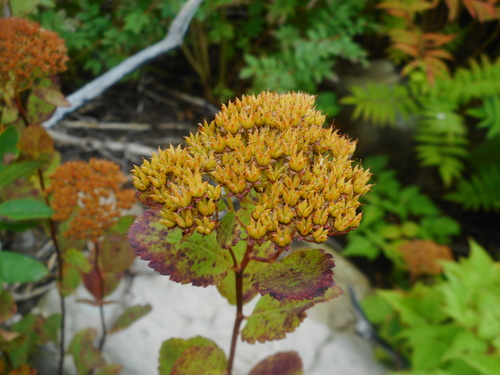
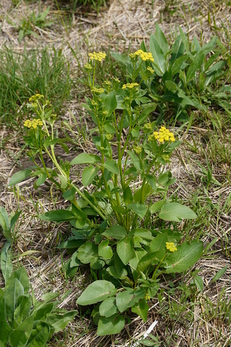
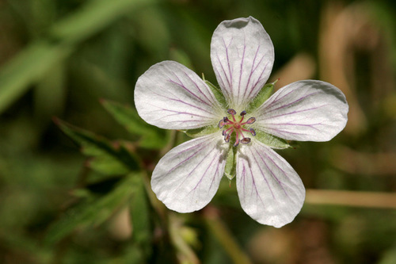
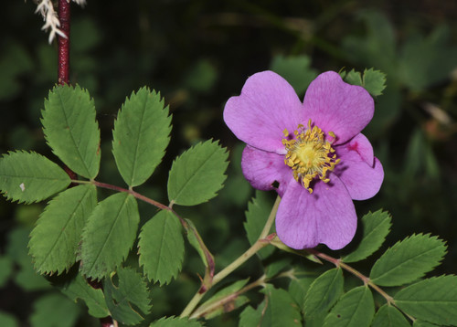

Hylaeus basalis
Hylaeus basalis native bee
Masked bees, small and widespread.
15 documented plant relationships.
sips nectar at

Birch-leaved SpireaSpiraea betulifolia Douglas Goldman, some rights reserved (CC BY-SA), uploaded by Douglas Goldman") FireweedChamaenerion angustifolium
FireweedChamaenerion angustifolium
Heart-leaved Alexanders (Golden Alexanders)Zizia aptera Sarah Johnson, some rights reserved (CC BY), uploaded by Sarah Johnson") MeadowsweetSpiraea alba
MeadowsweetSpiraea alba Tom Norton, some rights reserved (CC BY), uploaded by Tom Norton") Pearly EverlastingAnaphalis margaritacea
Pearly EverlastingAnaphalis margaritacea Slender Cinquefoil (Graceful Cinquefoil)Potentilla gracilis
Slender Cinquefoil (Graceful Cinquefoil)Potentilla gracilis Sticky Purple GeraniumGeranium viscosissimum
Sticky Purple GeraniumGeranium viscosissimum Kate, some rights reserved (CC BY), uploaded by Kate") Sulphur HedysarumHedysarum sulphurescens
Sulphur HedysarumHedysarum sulphurescens Gavin Slater, some rights reserved (CC BY), uploaded by Gavin Slater") ThimbleberryRubus parviflorus
ThimbleberryRubus parviflorus
White GeraniumGeranium richardsonii
Woods' RoseRosa woodsii Justin Meissen, some rights reserved (CC BY-SA)")
 Tom Norton, some rights reserved (CC BY), uploaded by Tom Norton")